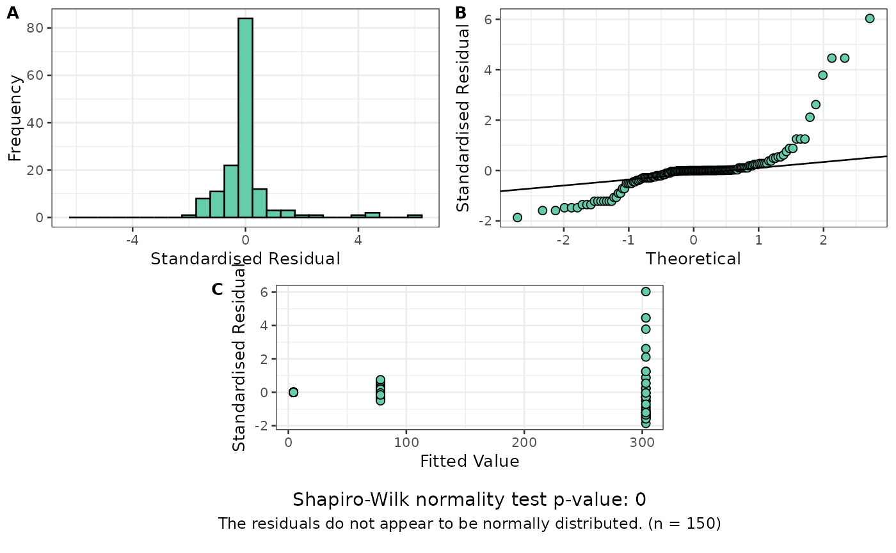
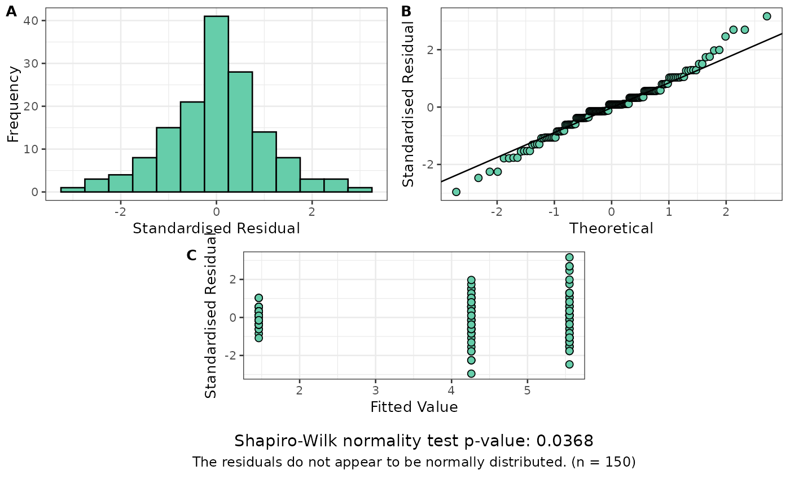
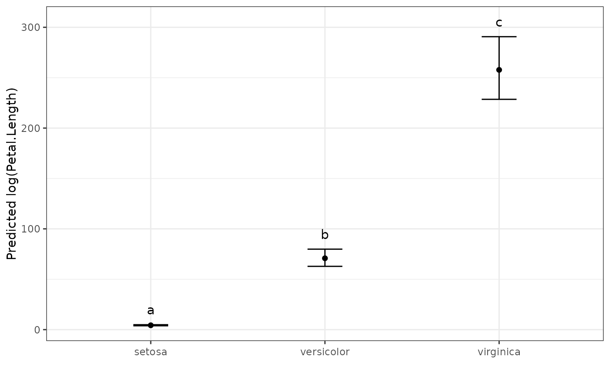
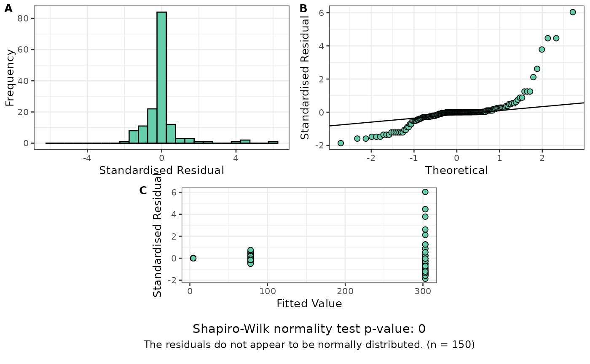
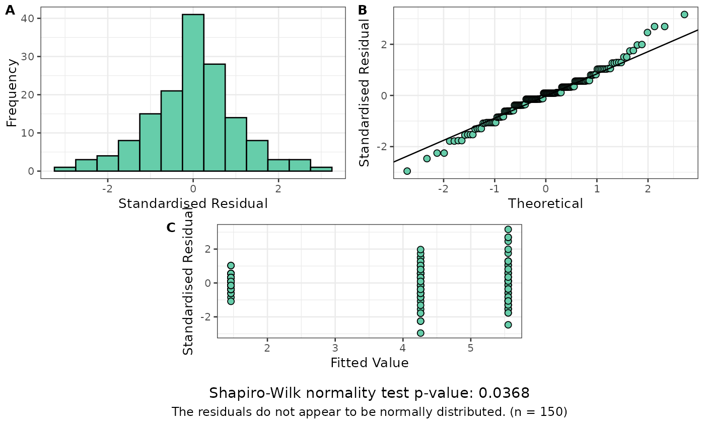
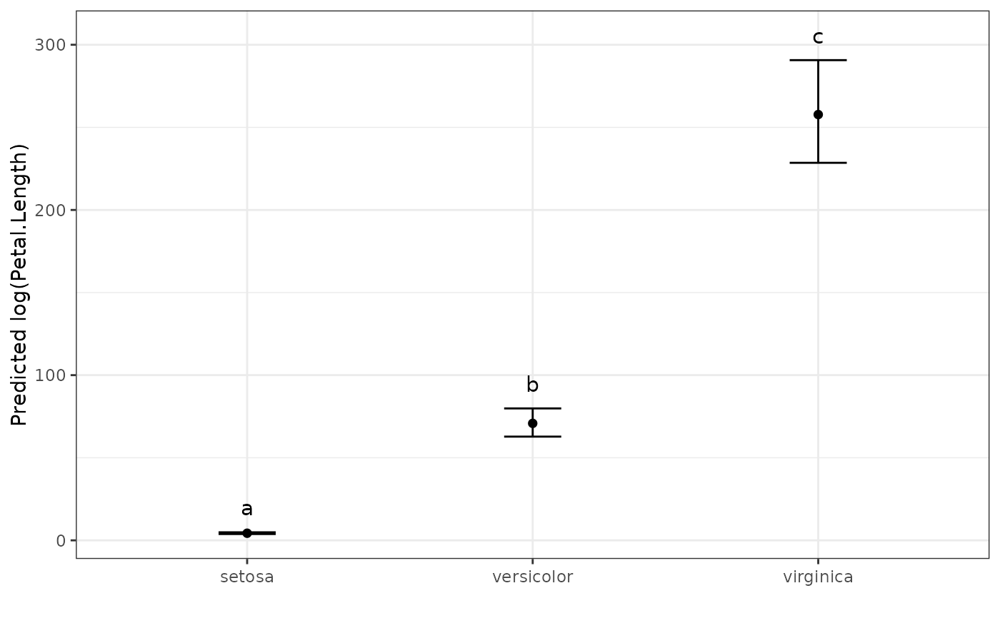

A function for comparing and ranking predicted means with Tukey's Honest Significant Difference (HSD) Test.
Usage
multiple_comparisons(
model.obj,
classify,
sig = 0.05,
int.type = "ci",
trans = NULL,
offset = NULL,
power = NULL,
decimals = 2,
descending = FALSE,
groups = TRUE,
plot = FALSE,
label_height = 0.1,
rotation = 0,
save = FALSE,
savename = "predicted_values",
order,
pred.obj,
pred,
...
)Arguments
- model.obj
An ASReml-R or aov model object. Will likely also work with
lme(nlme::lme()),lmerMod(lme4::lmer()) models as well.- classify
Name of predictor variable as string.
- sig
The significance level, numeric between 0 and 1. Default is 0.05.
- int.type
The type of confidence interval to calculate. One of
ci,tukey,1seor2se. Default isci.- trans
Transformation that was applied to the response variable. One of
log,sqrt,logit,powerorinverse. Default isNULL.- offset
Numeric offset applied to response variable prior to transformation. Default is
NULL. Use 0 if no offset was applied to the transformed data. See Details for more information.- power
Numeric power applied to response variable with power transformation. Default is
NULL. See Details for more information.- decimals
Controls rounding of decimal places in output. Default is 2 decimal places.
- descending
Logical (default
FALSE). Order of the output sorted by the predicted value. IfTRUE, largest will be first, through to smallest last.- groups
Logical (default
TRUE). IfTRUE, the significance letter groupings will be calculated and displayed. This can get overwhelming for large numbers of comparisons, so can be turned off by setting toFALSE.- plot
Automatically produce a plot of the output of the multiple comparison test? Default is
FALSE. This is maintained for backwards compatibility, but the preferred method now is to useautoplot(<multiple_comparisons output>). Seeautoplot.mct()for more details.- label_height
Height of the text labels above the upper error bar on the plot. Default is 0.1 (10%) of the difference between upper and lower error bars above the top error bar.
- rotation
Rotate the text output as Treatments within the plot. Allows for easier reading of long treatment labels. Number between 0 and 360 (inclusive) - default 0
- save
Logical (default
FALSE). Save the predicted values to a csv file?- savename
A file name for the predicted values to be saved to. Default is
predicted_values.- order
Deprecated. Use
descendinginstead.- pred.obj
Deprecated. Predicted values are calculated within the function from version 1.0.1 onwards.
- pred
Deprecated. Use
classifyinstead.- ...
Other arguments passed through to
get_predictions().
Value
A list containing a data frame with predicted means, standard errors,
confidence interval upper and lower bounds, and significant group
allocations (named predicted_values), as well as a plot visually
displaying the predicted values (named predicted_plot). If some of the
predicted values are aliased, a warning is printed, and the aliased
treatment levels are returned in the output (named aliased).
Details
Offset
Some transformations require that data has a small offset to be
applied, otherwise it will cause errors (for example taking a log of 0, or
the square root of negative values). In order to correctly reverse this
offset, if the trans argument is supplied, a value should also be supplied
in the offset argument. By default the function assumes no offset was
required for a transformation, implying a value of 0 for the offset
argument. If an offset value is provided, use the same value as provided in
the model, not the inverse. For example, if adding 0.1 to values for a log
transformation, add 0.1 in the offset argument.
Power
The power argument allows the specification of arbitrary powers to be back transformed, if they have been used to attempt to improve normality of residuals.
#' ## Confidence Intervals & Comparison Intervals
The function provides several options for confidence intervals via the int.type argument:
tukey(default): Tukey comparison intervals that are consistent with the multiple comparison test. These intervals are wider than regular confidence intervals and are designed so that non-overlapping intervals correspond to statistically significant differences in the Tukey HSD test. This ensures visual consistency between the intervals and letter groupings.ci: Traditional confidence intervals for individual means. These estimate the precision of each individual mean but may not align with the multiple comparison results. Non-overlapping traditional confidence intervals do not necessarily indicate significant differences in multiple comparison tests.1seand2se: Intervals of ±1 or ±2 standard errors around each mean.
By default, the function displays regular confidence intervals (int.type = "ci"),
which estimate the precision of individual treatment means. However, when
performing multiple comparisons, these regular confidence intervals may not
align with the letter groupings from Tukey's HSD test. Specifically, you may
observe non-overlapping confidence intervals for treatments that share the
same letter group (indicating no significant difference).
This occurs because regular confidence intervals and Tukey's HSD test serve different purposes:
Regular confidence intervals estimate individual mean precision
Tukey's HSD controls the family-wise error rate across all pairwise comparisons
To resolve this visual inconsistency, you can use Tukey comparison intervals
(int.type = "tukey"). These intervals are specifically designed for multiple
comparisons and will be consistent with the letter groupings: non-overlapping
Tukey intervals indicate significant differences, while overlapping intervals
suggest no significant difference.
The function will issue a message if it detects potential inconsistencies between non-overlapping confidence intervals and letter groupings, suggesting the use of Tukey intervals for clearer interpretation. For multiple comparison contexts, Tukey comparison intervals are recommended as they provide visual consistency with the statistical test being performed and avoid the common confusion where traditional confidence intervals don't overlap but groups share the same significance letter.
References
Jørgensen, E. & Pedersen, A. R. (1997). How to Obtain Those Nasty Standard Errors From Transformed Data - and Why They Should Not Be Used. https://pure.au.dk/portal/en/publications/how-to-obtain-those-nasty-standard-errors-from-transformed-data-a
Examples
# Fit aov model
model <- aov(Petal.Length ~ Species, data = iris)
# Display the ANOVA table for the model
anova(model)
#> Analysis of Variance Table
#>
#> Response: Petal.Length
#> Df Sum Sq Mean Sq F value Pr(>F)
#> Species 2 437.10 218.551 1180.2 < 2.2e-16 ***
#> Residuals 147 27.22 0.185
#> ---
#> Signif. codes: 0 ‘***’ 0.001 ‘**’ 0.01 ‘*’ 0.05 ‘.’ 0.1 ‘ ’ 1
# Determine ranking and groups according to Tukey's Test (with Tukey intervals)
pred.out <- multiple_comparisons(model, classify = "Species")
# Display the predicted values table
pred.out
#> Species predicted.value std.error df groups ci low up
#> 1 setosa 1.46 0.06 147 a 0.12 1.34 1.58
#> 2 versicolor 4.26 0.06 147 b 0.12 4.14 4.38
#> 3 virginica 5.55 0.06 147 c 0.12 5.43 5.67
# Show the predicted values plot
autoplot(pred.out, label_height = 0.5)
 # Use traditional confidence intervals instead of Tukey comparison intervals
pred.out.ci <- multiple_comparisons(model, classify = "Species", int.type = "ci")
pred.out.ci
#> Species predicted.value std.error df groups ci low up
#> 1 setosa 1.46 0.06 147 a 0.12 1.34 1.58
#> 2 versicolor 4.26 0.06 147 b 0.12 4.14 4.38
#> 3 virginica 5.55 0.06 147 c 0.12 5.43 5.67
# AOV model example with transformation
my_iris <- iris
my_iris$Petal.Length <- exp(my_iris$Petal.Length) # Create exponential response
exp_model <- aov(Petal.Length ~ Species, data = my_iris)
resplot(exp_model) # Residual plot shows problems

# Fit a new model using a log transformation of the response
log_model <- aov(log(Petal.Length) ~ Species, data = my_iris)
resplot(log_model) # Looks much better

# Display the ANOVA table for the model
anova(log_model)
#> Analysis of Variance Table
#>
#> Response: log(Petal.Length)
#> Df Sum Sq Mean Sq F value Pr(>F)
#> Species 2 437.10 218.551 1180.2 < 2.2e-16 ***
#> Residuals 147 27.22 0.185
#> ---
#> Signif. codes: 0 ‘***’ 0.001 ‘**’ 0.01 ‘*’ 0.05 ‘.’ 0.1 ‘ ’ 1
# Back transform, because the "original" data was exponential
pred.out <- multiple_comparisons(log_model, classify = "Species",
trans = "log")
#> Warning: Offset value assumed to be 0. Change with `offset` argument.
# Display the predicted values table
pred.out
#> Species predicted.value std.error df groups ci PredictedValue ApproxSE
#> 1 setosa 1.46 0.06 147 a 0.12 4.31 0.26
#> 2 versicolor 4.26 0.06 147 b 0.12 70.81 4.31
#> 3 virginica 5.55 0.06 147 c 0.12 257.75 15.69
#> low up
#> 1 3.83 4.87
#> 2 62.79 79.86
#> 3 228.54 290.69
# Show the predicted values plot
autoplot(pred.out, label_height = 15)

if (FALSE) { # \dontrun{
# ASReml-R Example
library(asreml)
#Fit ASReml Model
model.asr <- asreml(yield ~ Nitrogen + Variety + Nitrogen:Variety,
random = ~ Blocks + Blocks:Wplots,
residual = ~ units,
data = asreml::oats)
wald(model.asr) # Nitrogen main effect significant
#Determine ranking and groups according to Tukey's Test
pred.out <- multiple_comparisons(model.obj = model.asr, classify = "Nitrogen",
descending = TRUE, decimals = 5)
pred.out
# Example using a box-cox transformation
set.seed(42) # See the seed for reproducibility
resp <- rnorm(n = 50, 5, 1)^3
trt <- as.factor(sample(rep(LETTERS[1:10], 5), 50))
block <- as.factor(rep(1:5, each = 10))
ex_data <- data.frame(resp, trt, block)
# Change one treatment random values to get significant difference
ex_data$resp[ex_data$trt=="A"] <- rnorm(n = 5, 7, 1)^3
model.asr <- asreml(resp ~ trt,
random = ~ block,
residual = ~ units,
data = ex_data)
resplot(model.asr)
# Perform Box-Cox transformation and get maximum value
out <- MASS::boxcox(ex_data$resp~ex_data$trt)
out$x[which.max(out$y)] # 0.3838
# Fit cube root to the data
model.asr <- asreml(resp^(1/3) ~ trt,
random = ~ block,
residual = ~ units,
data = ex_data)
resplot(model.asr) # residual plots look much better
#Determine ranking and groups according to Tukey's Test
pred.out <- multiple_comparisons(model.obj = model.asr,
classify = "trt",
trans = "power", power = (1/3))
pred.out
autoplot(pred.out)
} # }
# Use traditional confidence intervals instead of Tukey comparison intervals
pred.out.ci <- multiple_comparisons(model, classify = "Species", int.type = "ci")
pred.out.ci
#> Species predicted.value std.error df groups ci low up
#> 1 setosa 1.46 0.06 147 a 0.12 1.34 1.58
#> 2 versicolor 4.26 0.06 147 b 0.12 4.14 4.38
#> 3 virginica 5.55 0.06 147 c 0.12 5.43 5.67
# AOV model example with transformation
my_iris <- iris
my_iris$Petal.Length <- exp(my_iris$Petal.Length) # Create exponential response
exp_model <- aov(Petal.Length ~ Species, data = my_iris)
resplot(exp_model) # Residual plot shows problems

# Fit a new model using a log transformation of the response
log_model <- aov(log(Petal.Length) ~ Species, data = my_iris)
resplot(log_model) # Looks much better

# Display the ANOVA table for the model
anova(log_model)
#> Analysis of Variance Table
#>
#> Response: log(Petal.Length)
#> Df Sum Sq Mean Sq F value Pr(>F)
#> Species 2 437.10 218.551 1180.2 < 2.2e-16 ***
#> Residuals 147 27.22 0.185
#> ---
#> Signif. codes: 0 ‘***’ 0.001 ‘**’ 0.01 ‘*’ 0.05 ‘.’ 0.1 ‘ ’ 1
# Back transform, because the "original" data was exponential
pred.out <- multiple_comparisons(log_model, classify = "Species",
trans = "log")
#> Warning: Offset value assumed to be 0. Change with `offset` argument.
# Display the predicted values table
pred.out
#> Species predicted.value std.error df groups ci PredictedValue ApproxSE
#> 1 setosa 1.46 0.06 147 a 0.12 4.31 0.26
#> 2 versicolor 4.26 0.06 147 b 0.12 70.81 4.31
#> 3 virginica 5.55 0.06 147 c 0.12 257.75 15.69
#> low up
#> 1 3.83 4.87
#> 2 62.79 79.86
#> 3 228.54 290.69
# Show the predicted values plot
autoplot(pred.out, label_height = 15)

if (FALSE) { # \dontrun{
# ASReml-R Example
library(asreml)
#Fit ASReml Model
model.asr <- asreml(yield ~ Nitrogen + Variety + Nitrogen:Variety,
random = ~ Blocks + Blocks:Wplots,
residual = ~ units,
data = asreml::oats)
wald(model.asr) # Nitrogen main effect significant
#Determine ranking and groups according to Tukey's Test
pred.out <- multiple_comparisons(model.obj = model.asr, classify = "Nitrogen",
descending = TRUE, decimals = 5)
pred.out
# Example using a box-cox transformation
set.seed(42) # See the seed for reproducibility
resp <- rnorm(n = 50, 5, 1)^3
trt <- as.factor(sample(rep(LETTERS[1:10], 5), 50))
block <- as.factor(rep(1:5, each = 10))
ex_data <- data.frame(resp, trt, block)
# Change one treatment random values to get significant difference
ex_data$resp[ex_data$trt=="A"] <- rnorm(n = 5, 7, 1)^3
model.asr <- asreml(resp ~ trt,
random = ~ block,
residual = ~ units,
data = ex_data)
resplot(model.asr)
# Perform Box-Cox transformation and get maximum value
out <- MASS::boxcox(ex_data$resp~ex_data$trt)
out$x[which.max(out$y)] # 0.3838
# Fit cube root to the data
model.asr <- asreml(resp^(1/3) ~ trt,
random = ~ block,
residual = ~ units,
data = ex_data)
resplot(model.asr) # residual plots look much better
#Determine ranking and groups according to Tukey's Test
pred.out <- multiple_comparisons(model.obj = model.asr,
classify = "trt",
trans = "power", power = (1/3))
pred.out
autoplot(pred.out)
} # }